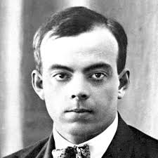

El Principito

Antoine de Saint-Exupéry ©

Valoración
Cuando yo tenía seis años vi una vez, en un libro sobre el bosque virgen que se llamaba 'Historias vividas', una lámina maravillosa. Representaba a una serpiente boa que se tragaba a una fiera. Decía el libro: 'Las serpientes boas tragan sus presas enteras, sin masticarlas. Luego no pueden moverse y duermen durante los seis meses que dura su digestión'.
Reflexioné mucho entonces sobre las aventuras de la jungla y logré, con un lápiz de color, realizar mi primer dibujo. Mi dibujo número uno. Era así: enseñé mi obra maestra a las personas mayores y les pregunté si mi dibujo les daba miedo.
Me respondieron: '¿Por qué habría de asustar un sombrero?'. Mi dibujo no representaba un sombrero. Representaba una serpiente boa que digería un elefante. Dibujé entonces el interior de la serpiente boa, para que las personas mayores pudieran comprender. Siempre necesitan explicaciones. Mi dibujo número dos era así: las personas mayores me aconsejaron dejar de lado los dibujos de serpientes boas abiertas o cerradas, y dedicarme más bien a la geografía, la historia, el cálculo y la gramática.
Así fue como abandoné, a la edad de seis años, una magnífica carrera de pintor. Había quedado desilusionado por el fracaso de mi dibujo número uno y de mi dibujo número dos. Las personas mayores nunca comprenden nada por sí solas, y es muy aburrido para los niños tener que darles siempre y siempre explicaciones.
Tuve, pues, que elegir otro oficio y aprendí a pilotear aviones. Volé un poco por todo el mundo; y es cierto que la geografía, en eso, me sirvió de mucho. Podía distinguir, de un golpe de vista, China de Arizona. Esto es muy útil, si uno se extravía durante la noche.
Así he tenido, en el curso de mi vida, muchas relaciones con mucha gente seria. Viví mucho entre personas mayores. Las he conocido muy de cerca. Pero esto no ha mejorado demasiado mi opinión sobre ellas.
Cuando encontraba a alguna que me parecía un poco lúcida, la ponía a prueba con mi dibujo número uno, que he conservado siempre. Quería saber si era verdaderamente comprensiva. Pero siempre me respondía: 'Es un sombrero'. Entonces no le hablaba ni de serpientes boas, ni de selvas vírgenes, ni de estrellas. Me ponía a su altura. Le hablaba de bridge, de golf, de política y de corbatas. Y la persona mayor se quedaba muy satisfecha de haber conocido a un hombre tan razonable.
Viví así, solo, sin nadie con quien poder hablar verdaderamente, hasta que tuve una avería en el desierto del Sahara, hace seis años. Algo se había roto en mi motor. Y como no llevaba conmigo ni mecánico ni pasajeros, me dispuse a realizar, solo, una reparación difícil. Era para mí cuestión de vida o muerte. Apenas tenía agua de beber para ocho días.
La primera noche dormí sobre la arena, a mil millas de toda tierra habitada. Estaba más aislado que un náufrago sobre una balsa en medio del océano. Imaginen, pues, mi sorpresa, al ser despertado al amanecer por una extraña vocecita que decía: — Por favor… dibújame un cordero.
— ¡Eh! — — Dibújame un cordero… Salté sobre mis pies como si hubiera sido fulminado por un rayo. Me froté bien los ojos. Miré bien. Y vi a un hombrecito extraordinario que me examinaba gravemente. Este es el comienzo del encuentro con el Principito.